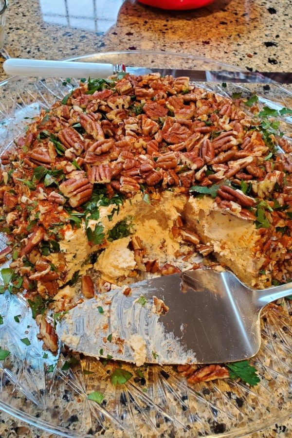

Herman Reunion Cheese Ball

Description
Have you ever wondered if you can freeze a cheese ball? The answer is yes! Which means you can follow this family cheese ball recipe to make these well before the holiday panic sets in, and freeze them to give as gifts to family and friends.
Ingredients
- Cheese balls:
- 3 (8 ounce) packages cream cheese, softened
- 1 tablespoon Worcestershire sauce
- 1 tablespoon hot pepper sauce
- ½ teaspoon minced garlic
- 1 pound shredded Cheddar cheese
- Nut coating:
- 1 cup finely chopped pecans
- ¼ cup finely chopped fresh parsley
Steps
- Combine cream cheese, Worcestershire sauce, hot pepper sauce, and garlic in a food processor; blend until well combined. Add Cheddar cheese and process until Cheddar is finely chopped but still very visible
- Remove mixture from the food processor and shape into 3 or 4 balls. Place in the freezer for 15 minutes
- Combine pecans and parsley in a shallow bowl. Remove chilled cheese balls from the freezer and roll in the pecan-parsley mixture until well coated
- Serve immediately, or rewrap nut-covered cheeseballs tightly with festive plastic wrap. Wrap again with aluminum foil, then freeze until ready to gift, up to 4 weeks
- Wrap each ball tightly in plastic wrap, and then in aluminum foil. Place in the freezer for up to 4 weeks